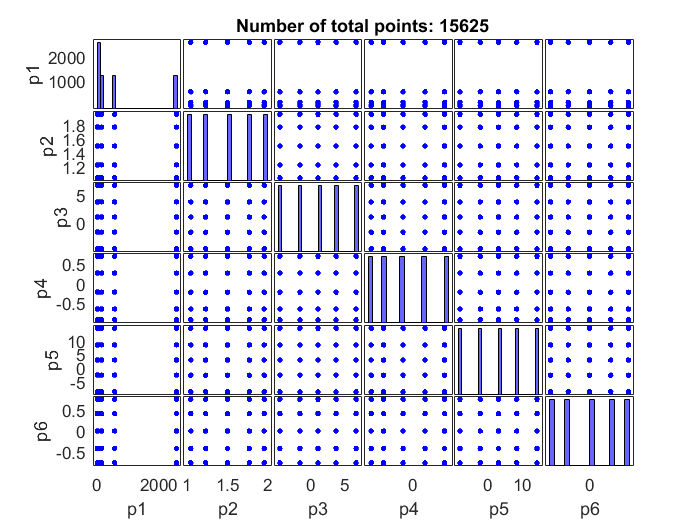
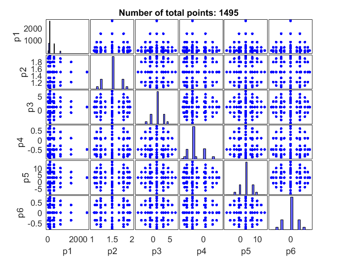

Get integration points and integration weights with quadrature rule II.
This script generates integration points and integration weights for 6 parameters and compares sparse grid and full tensor grid
Contents
Define the set of simulation parameters
% Initiate SimParamSet Q=SimParamSet(); % Add parameters Q.add(SimParameter('p1', LogNormalDistribution(5,1))); Q.add(SimParameter('p2', UniformDistribution(1,2))); Q.add(SimParameter('p3', NormalDistribution(1,2))); Q.add(SimParameter('p4', BetaDistribution(1,3))); Q.add(SimParameter('p5', NormalDistribution(3,4))); Q.add(SimParameter('p6', BetaDistribution(3,3)));
Get integration rule with full tensor grid
% Integration points and weights with full tensor grid [x_i, w_i]= Q.get_integration_points(5, 'grid', 'full_tensor'); gplotmatrix(x_i',[],[],[],[],10,[],'', Q.param_names, Q.param_names); title (strvarexpand('Number of total points: $length(w_i)$'))
Get integration rule with full tensor grid
% Integration points and weights with full tensor grid [xs_i, ws_i]= Q.get_integration_points(5, 'grid', 'smolyak'); gplotmatrix(xs_i',[],[],[],[],10,[],'', Q.param_names, Q.param_names); title (strvarexpand('Number of total points: $length(ws_i)$'))